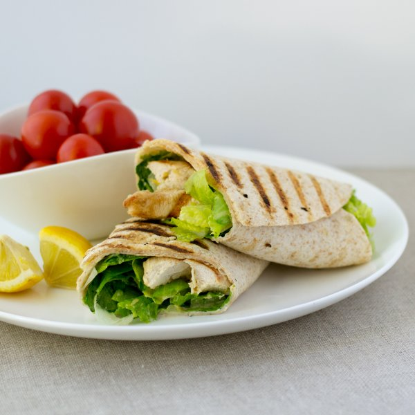

Grilled Chicken Caesar Wrap with Grape Tomatoes

Total Time
40 min
Nutrition (per serving)
664.5 kcalCalories
38.1 gProtein
46.2 gCarbs
37.3 gFat
Full nutrition table
| Calories | 664.5 kcal |
| Total fat | 37.3 g |
| Saturated fat | 11.8 g |
| Trans fat | 0.8 g |
| Cholesterol | 88.4 mg |
| Sodium | 510.2 mg |
| Carbohydrates | 46.2 g |
| Fiber | 6.6 g |
| Sugars | 9.6 g |
| Protein | 38.1 g |
| Potassium | 1267.8 mg |
| Calcium | 163.8 mg |
| Iron | 4.7 mg |
| Vitamin A | 1285.3 IU |
| Vitamin C | 36 mg |
| Vitamin D | 2.5 IU |
Cookware
Ingredients
- 1 lbchicken breasts, boneless skinless
- 4 clovesgarlic
- 2 pintsgrape tomatoes
- 4large flour tortillas
- 2lemons
- 1 ozParmesan cheese
- ¼ cupplain Greek yogurt
- 1 headromaine lettuce
- black pepper
- Dijon mustard
- extra virgin olive oil
- salt
- virgin coconut oil
- Worcestershire sauce
Steps
- Heat a grill pan, outdoor grill, or skillet over medium-high heat.
- Peel and mince garlic. Grate 2 tsp of lemon zest. In a medium bowl, prepare marinade by whisking together ½ of the garlic (save the rest for the dressing), lemon zest and juice, olive oil, salt, and pepper.4 cloves garlic
zest and juice from 1 lemon
2 tbsp extra virgin olive oil
¼ tsp salt
¼ tsp black pepper - Slice chicken in half horizontally to form thin fillets. Add to marinade and toss to coat.1 lb chicken breasts, boneless skinless
- Coat grill or bottom of skillet with oil. Add chicken and cook until cooked through, 2-3 minutes per side.2 tbsp virgin coconut oil
- Wash and dry lettuce. Halve lengthwise, then chop crosswise into 1 inch strips. Transfer to a large bowl.1 head romaine lettuce
- Grate ¼ cup of Parmesan. In a medium bowl, prepare dressing by whisking together remaining garlic, Parmesan, lemon juice, yogurt, olive oil, Dijon, Worcestershire, salt, and pepper.1 oz Parmesan cheese
juice of ½ lemon
¼ cup plain Greek yogurt
4 tbsp extra virgin olive oil
½ tsp Dijon mustard
½ tsp Worcestershire sauce
¼ tsp salt
¼ tsp black pepper - Pour dressing into bowl with lettuce and toss to coat.
- Thinly slice chicken into strips.
- Place tortillas on a flat surface, add lettuce to the middle, and top with chicken. Tightly roll to close. Place on the grill/skillet seam side down and toast until golden brown, 1-2 minutes per side.4 large flour tortillas
- Slice remaining lemon into wedges. Wash tomatoes.½ lemon
2 pints grape tomatoes - To serve, place chicken wraps on a plate, add tomatoes on the side, and garnish with lemon wedges. Enjoy!